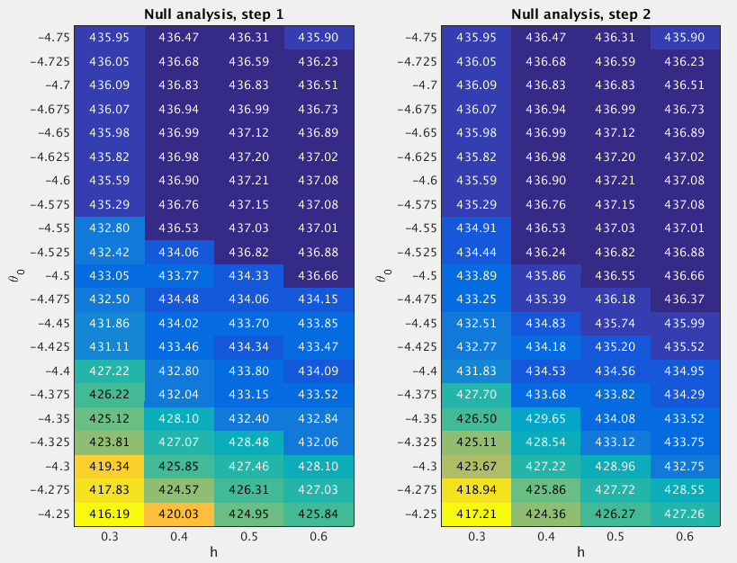

13.2 GSEA Round 2
Last updated: 2016-10-11
Code version: d16dc282bb2862b75ac0de9e5c3c03258a84bfc5
13.2.1 Fit the null model
From the Round 1 null analysis (Section 13.1), I found that almost 95.3% posterior mass is concentrated on the settings h=[0.4 0.5 0.6] and theta0=-4.5. In Round 2, I used a finer grid. Specifically, I used the grids theta0=(-4.75:0.025:-4.25)' and h=(0.3:0.1:0.6)' when fitting the null model. I estimated the (unnormalized) log importance weights (“pseudo-likelihoods”) for all 84 sets of (h,theta0) under null.

After normalizing the log “pseudo-likelihoods” (logw.step*) to posterior probabilities (posp.step*), we can see that almost 99.8% posterior mass is concentrated on the settings h=(0.3:0.1:0.6)' and theta0=(-4.75:0.025:-4.35)'.
theta0.index <- as.character(null.df$theta0) %in% as.character(seq(-4.75,-4.35,by=0.025))
sum(null.df$posp.step2[theta0.index]) ## [1] 0.997751613.2.2 Fit the enrichment model
To perform GSEA, I set h=(0.3:0.1:0.6)' and theta0=(-4.75:0.025:-4.35)', since the null analysis suggests that almost 99.8% posterior mass is placed on these settings. For the log-fold enrichment parameter, I use the grid theta = (0:(3/60):3)'. The following table lists the GSEA results.
gsea.path <- "~/Dropbox/rss/Data/t2d_2012/pathway/t2d2012_pathway_201609.mat"
gsea.df <- gsea.mat2df(gsea.path) source("src/gsea_dt.R")
gsea.dt